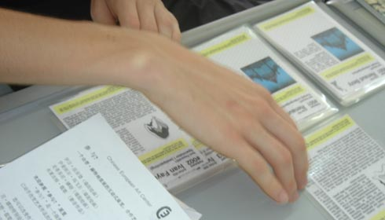
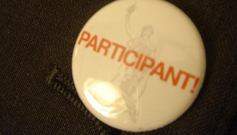
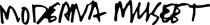

basekamp space > Events
Participate?
Dates: December 6, 7 & 8th, 5-9 PM
Location: Basekamp space
Description: 3 evenings of events on 3 continents: China, the US, and Sweden
Date: Thursday Dec 8th, during the last event.
Location: Basekamp space
Description: Book release of “I Am A Curator”, ed. by Per Hüttner

What is Participate?
An interactive project by Per Hüttner (Paris) in collaboration with Ciceron group (Norrköping, Sweden) and basekamp (Philadelphia).
Welcome to Participate? an exhibition that
differs from other contemporary art exhibitions. It invites the visitor
to the gallery to actively engage with the displayed artwork and physically
change the exhibition. He or she can thus change the size, location,
and sometimes even the design of some of the specially designed wall
paintings. Likewise the audience can move around, change and develop
specially designed sculptural work and choose the number, placement,
and selection of various video-pieces or decide whether to show them
projected onto a wall or shown on a monitor.
The exhibition discusses the problems and benefits
of democracy by allowing the visitor enter into the process of making
the exhibition. It will change according to the democratic process
(or lack thereof) in the country where it is shown. The project was first
shown at the Chinese European Art Center in Xiamen. Basekamp is
the second stop of the travelling exhibition and it will finally be shown
at Krafstationen i Drags in
Sweden in February 2006.
Participate? is a vehicle for encouraging a discussion
about the role of democracy, art and how they are interlinked in contemporary
society. We warmly invite you to basekamp to come and enjoy a drink at
the democratic bar, join the discussions and if
you feel like it participate in the ongoing changes of the exhibition!
With artworks
by:
Active Space Renaud Bezy Heidi
Cody Hasan Elahi
Ivan Fayard Ghazel Emmanuelle
Mafille Valérie Mréjen
Stéphanie Nava Louise Nilsson Tomas
Nordmark
Leigh Stevens Frida Thorell Ben
Volta Brigitte Zieger
photos
from xiamen
ciceron
group


The project
is supported by Moderna Museets International Program, Stockholm, The
Consulate General of Sweden in Canton, Linköping University,
Sweden, and the West Collection, US.